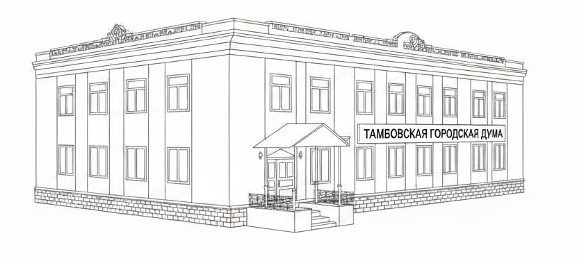

Тамбовская городская Дума
Тамбовской области
г. Тамбов, пл. Первомайская, 28
Депутаты
О Думе
Тамбовская городская Дума Тамбовской области — представительный орган местного самоуправления города Тамбова.
В своей деятельности руководствуется Конституцией Российской Федерации, федеральными законами и Уставом города Тамбова.